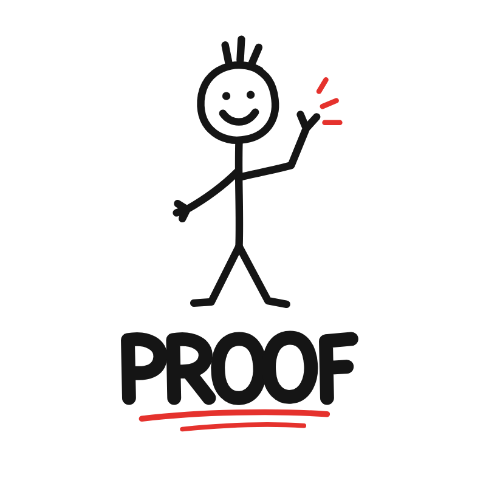

Draw.
Same challenge. A blank canvas.
Twenty seconds. Just your hand.

AI can generate anything.
You get 20 seconds and a blank canvas.
Sign it with your wallet. Download it. Let someone verify it.
Connecting to the shared wall…
Real shaky lines from the project’s example collection.
Same challenge. A blank canvas.
Twenty seconds. Just your hand.
Your strokes, pauses and corrections
create an experimental human signal.
Pick the proof that speaks to you.
The humans decide.
The most votes wins the round.
Your drawing. Everyone’s wall.
PROOF explores whether real-time creative challenges and behavioral input can become a lightweight human signal for an internet increasingly populated by autonomous agents.
Experimental signals, not scientifically validated identity verification.Human signals: real pointer and touch data, timing, corrections, proof history and community votes.
Next to explore: wallet identity, persistent reputation, community consensus and on-chain proof references.
A coordination and reward asset intended for 47LEtko2SRrwjqb66FdyQCz1W84R45i2Vux9KKnkpump protocol. Future ideas: challenge rewards, seeded pots, participation incentives and governance.
FwDHS8gRTExrx29EvLQnL2KPQpS9QYVwfUYdKFW6pump